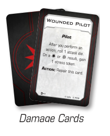

DAMAGE CARDS
Damage cards are used to track how much damage a ship has suffered. When a ship needs to be dealt damage cards, the player uses their own damage deck. After a ship is destroyed, its damage cards remain on that ship.

Damage Cards
Some abilities can cause damage cards to be flipped. A facedown damage card can be exposed, which flips it faceup and the effect is resolved. Both facedown and faceup damage cards can be repaired. If a faceup damage card is repaired, it is flipped facedown. If a facedown damage card is repaired, it is discarded.
-
Exposing a damage card does not count as dealing a damage card and therefore does not trigger abilities related to suffering damage.
-
If an ability exposes or repairs a ship’s facedown damage card, and the ship has multiple facedown damage cards, the card is chosen randomly from the facedown damage cards the ship has.
- To randomly select a facedown damage card, one player shuffles those cards and the other player chooses one.
-
If an ability allows a ship to repair a damage card without specifying faceup or facedown, the player can choose to repair either type.
-
A ship’s hull value is not reduced by being dealt damage cards.
-
The text of a ship’s facedown damage cards cannot be looked at unless an effect specifies to do so.
-
If a damage deck is empty when a damage card must be dealt or drawn, remove all damage cards from destroyed ships, flip them facedown, and shuffle them to create a new damage deck.
- If there are still not enough damage cards in a damage deck, record how many facedown damage cards each ship has with scratch-paper or markers, then shuffle those facedown damage cards to create a new deck.
-
Each damage card is numbered 1–14 on the bottom of the card. Near that number, there is a number of pips that indicate the number of copies of that damage card that are in the deck. This is useful to identify whether cards are missing and if so, how many and which cards.
-
Huge ships have their own damage cards. See Appendix: Huge Ships.